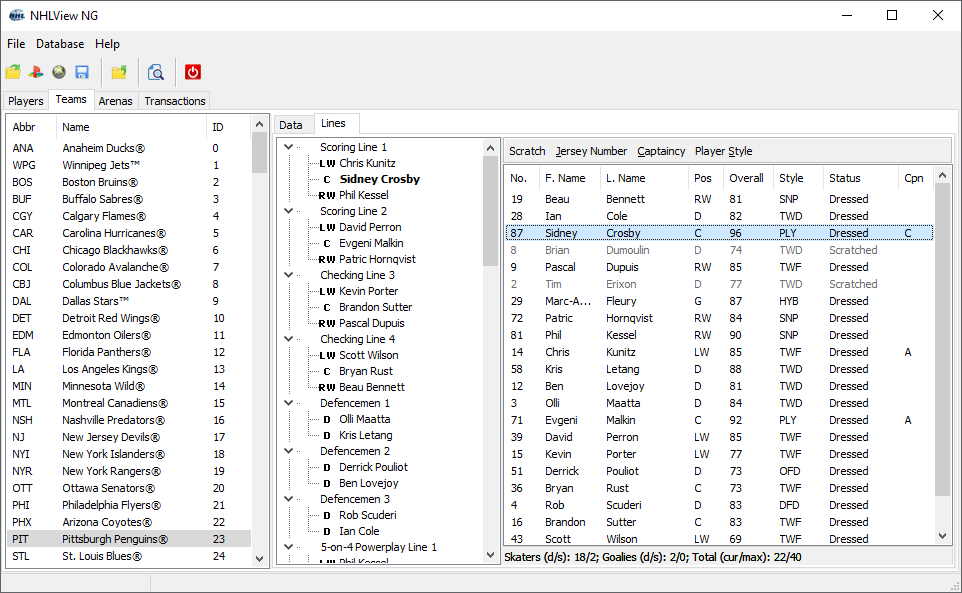

The Lines page displays the current lines assignment of the selected team and allows to edit some per-instance player information such as jersey number and style:

Team Lines Editor
The Line Editor Screen further sub-divides the Teams Tab into the Lines Tree and the Roster List. On top of the Roster List, there are commands that allow you to dress or scratch the currently selected player, change his jersey number, captaincy or style. At the bottom of the Roster List, a count of dressed and scratched skaters and goalies is displayed, along with the total number of players on the roster. Each team also has a maximum number of players it can have on the roster. This number is different for each version of NHL. In NHL 14, a team may have up to 40 players on the roster. This maximum is also displayed at the bottom of the Roster List.
To edit team lines, follow the following procedure:
·Select the slot where you want to assign a player in the Lines Tree.
·Select the player you want to assign to the chosen line slot in the Roster List. The selected player will be bolded in the Lines Tree in every slot he is already assigned.
·Double-click on the player to assign him to the selected line slot. If the player is already present on the same line, he will swap slots with the player in the selected slot.
·If you double-click on a scratched player, he will be automatically dressed and will replace the player in the selected line slot as well as in all the other slots occupied by the same player.
·Scratching a player will empty the line slot.